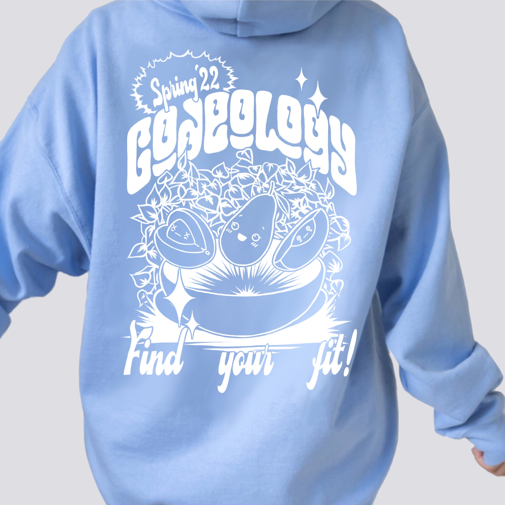
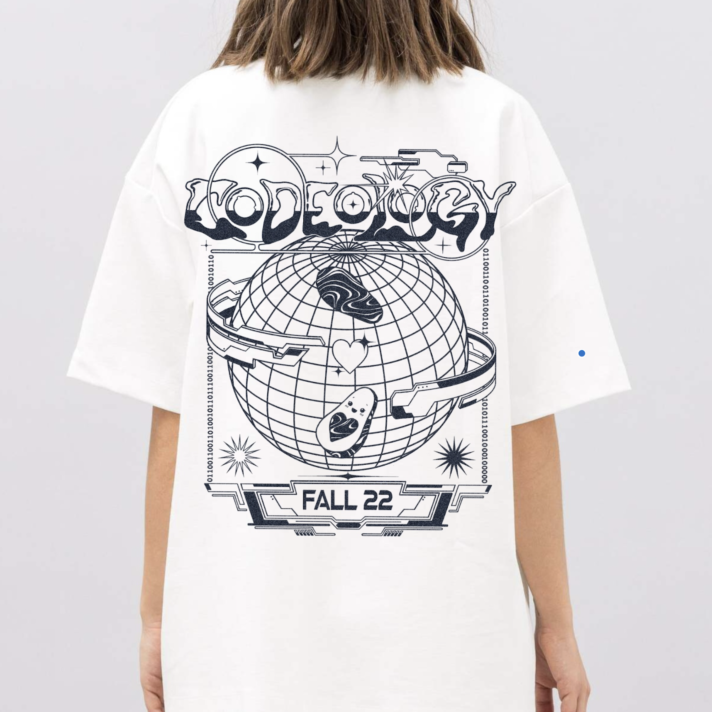
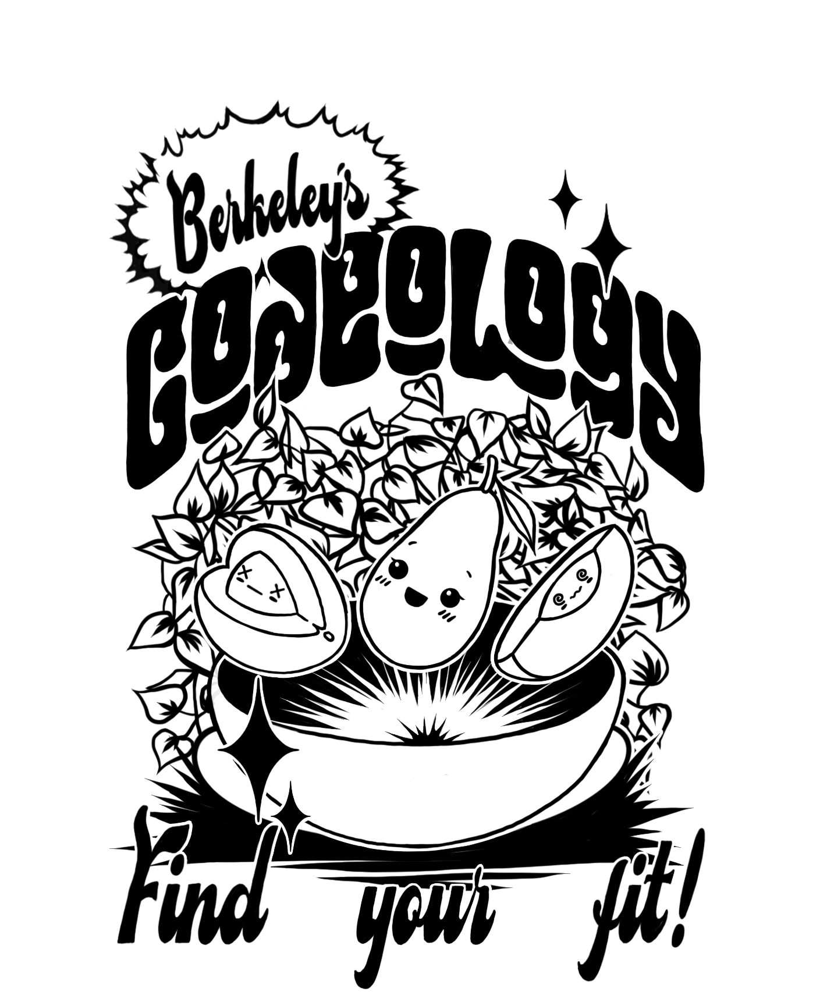
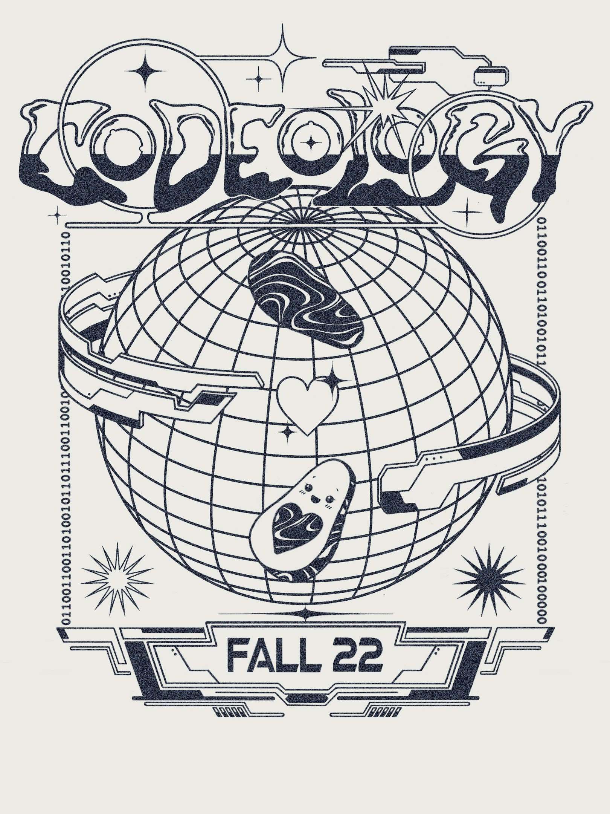
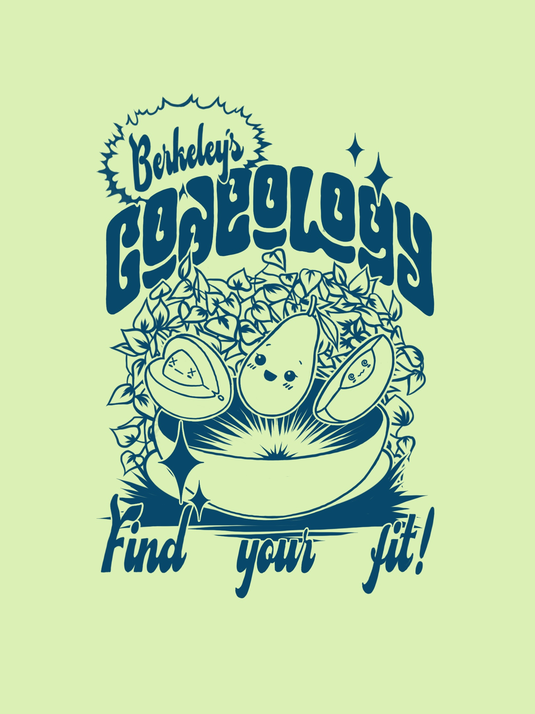

Codeology Merch
Single-color illustration on tees and hoodies for an internal club run.
Codeology is a community-focused tech club at UC Berkeley that works to provide a welcoming, educational support network for students looking to explore the tech industry. I was asked to create unique designs for the club’s internal merchandise.
Because this project was primarily for the enjoyment of the members, I took the opportunity to exercise my creativity in element layout, visual flow, and spatial balance. For both designs, I worked with a single color to stay cost effective, instead concentrating on linework and composition to create visual complexity.




